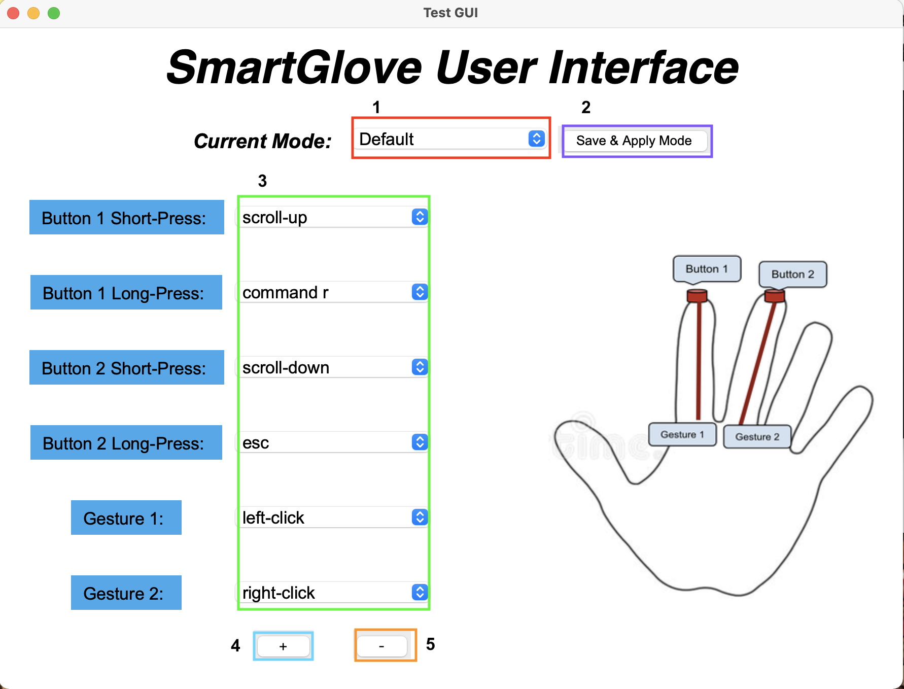

SmartGlove
Overview
Demo Video
Currently, there exist many computer applications where traditional mouse and keyboard input is impractical or a hindrance to performance. These hindrances include computer users with limited or no use of one hand; large presentations; computer gaming; and more. Therefore, it is necessary to provide a means of computer input that is intuitive, mobile, and easily usable with one hand.

We deisgned a computer input device in the form of a glove that works both as a mouse and a keyboard. The glove is be a fully wireless input device
attached to the user’s hand. It includes a camera that looks at an IR (infrared) LED base station, providing
real-time position tracking of the user’s hand, and will communicate input information to the user’s computer.
The LED base station will also be a means of charging the glove when not in use. A software program will be
running on the user’s computer to interpret the raw input data from the glove based on user preferences and
provide an interactive GUI for device management.
Detailed report can be found here.